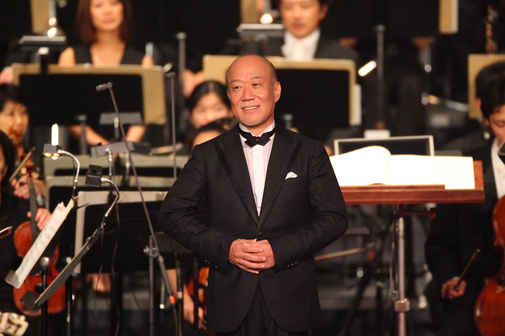

Hisaishi nació el 6 de diciembre de 1950 en Nagano (Japón). Comenzó sus clases de violín a los 5 años descubriendo su pasión por la música. Posteriormente cursó estudios superiores de composición en Kunitachi. Su debut tuvo lugar en 1981 con la publicación de su álbum MKWAJU, compuesto para conjunto de percusión, teclados y programación electrónica. Al año siguiente firmó su segundo álbum, Information (1982), acreditado bajo el seudónimo Wonder City Orchestra denominación que utilizó para englobar también al resto de colaboradores. Su nombre artístico "Joe Hisaishi" hace referencia a su ídolo, el músico y compositor americano Quincy Jones: el kanji 久 se pronuncia hisa o bien kyū; así, el nombre 久石 譲, puede leerse tanto Hisaishi Jō como Kyūishi Jō, que a su vez suena parecido a Quincy Jones (en japonés Quincy Jones se escribe クインシー・ジョーンズ, kuinshī jōnzu).
En 1983 Hisaishi compuso la primera de sus bandas sonoras para la productora Studio Ghibli y, concretamente, para las películas del director de animación Hayao Miyazaki. Además de obtener numerosos galardones la cooperación entre Hishaishi y Miyazaki tendría continuidad durante varias décadas y alcanzaría notable repercusión tanto en el público japonés como internacional. Las bandas sonoras para las películas Nausicaä del Valle del Viento (風の谷のナウシカ, Kaze no Tani no Naushika) (1984), Mi vecino Totoro (となりのトトロ, Tonari no Totoro?) (1988), La princesa Mononoke (もののけ姫, Mononoke Hime?) (1997), El viaje de Chihiro (千と千尋の神隠し, Sen to Chihiro no Kamikakushi) (2001),17 El castillo ambulante (ハウルの動く城, Hauru no Ugoku Shiro) (2004) o El viento se levanta (風立ちぬ, Kaze Tachinu) (2003) figuran entre las más destacadas.
También abordó la composición de bandas sonoras para otros directores y géneros. Son reseñables sus colaboraciones con el director Takeshi Kitano, en El verano de Kikujiro (菊次郎の夏 Kikujiro No Natsu) (1999) u Outrage (アウトレイジ, Autoreiji) (2010), o con el director Yōjirō Takita y la película Despedidas (おくりびと, Okuribito) ganadora del Premio Óscar 2009 como mejor película de habla no inglesa.
En 2009 recibió del Gobierno de Japón la Medalla de Honor de cinta púrpura.
Desde 2013 Hisaishi ha realizado una pausa en la creación de bandas sonoras para películas centrando sus trabajos en otro tipo de composiciones, como las realizadas para videojuegos, ejerciendo como arreglista musical y dando giras como director de orquesta en Asia, América y Europa.